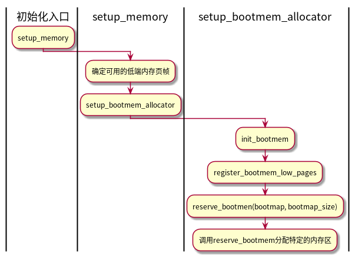

Memory
Table of Contents
1 概览
- 内存管理涵盖的领域
- 内存中的物理内存页的管理
- 分配大块内存的伙伴系统
- 分配较小块内存的slab、slub和slob分配器
- 分配非连续内存块的vmalloc机制
- 进程的地址空间
- 两种不同类型计算机的内存管理
- UMA计算机: 一致内存访问，uniform memory access。将可用内存以连续方式组织起来。
- NUMA计算机: 非一致性内存访问，non-uniform memory access。多处理器计算机。系统各个CPU都有本地内存，各个处理器通过总线连接，以支持访问其他cpu的本地内存。cpu访问本地内存较快，访问其他cpu本地内存稍慢。
2 UMA和NUMA的内存组织
2.1 概述
2.1.1 结点
首先，内存划分为结点。每个结点关联一个处理器。在内核中使用 pg_data_t 结构的实例来表示。
2.1.2 内存域
各个结点又划分为内存域，是内存的进一步细分。
内核使用下列常量来枚举系统中的所有内存域：
enum zone_type { #ifdef CONFIG_ZONE_DMA /* * ZONE_DMA is used when there are devices that are not able * to do DMA to all of addressable memory (ZONE_NORMAL). Then we * carve out the portion of memory that is needed for these devices. * The range is arch specific. * * Some examples * * Architecture Limit * --------------------------- * parisc, ia64, sparc <4G * s390 <2G * arm Various * alpha Unlimited or 0-16MB. * * i386, x86_64 and multiple other arches * <16M. */ ZONE_DMA, #endif #ifdef CONFIG_ZONE_DMA32 /* * x86_64 needs two ZONE_DMAs because it supports devices that are * only able to do DMA to the lower 16M but also 32 bit devices that * can only do DMA areas below 4G. */ ZONE_DMA32, #endif /* * Normal addressable memory is in ZONE_NORMAL. DMA operations can be * performed on pages in ZONE_NORMAL if the DMA devices support * transfers to all addressable memory. */ ZONE_NORMAL, #ifdef CONFIG_HIGHMEM /* * A memory area that is only addressable by the kernel through * mapping portions into its own address space. This is for example * used by i386 to allow the kernel to address the memory beyond * 900MB. The kernel will set up special mappings (page * table entries on i386) for each page that the kernel needs to * access. */ ZONE_HIGHMEM, #endif ZONE_MOVABLE, MAX_NR_ZONES };
- ZONE_DMA : 标记适合DMA的内存域
- ZONE_DMA32 : 标记了使用32为地址寻址、适合DMA的内存域(32位计算机为空)
- ZONE_NORMAL : 可以直接映射内核段的普通内存域
- ZONE_HIGHMEM : 超出内核段的物理内存
- ZONE_MOVABLE : 在防止物理内存碎片时使用
每个内存域都会关联一个数组，用来组织属于该内存域的物理内存页（页帧），每个页帧分配了一个 struct page实例。
2.2 内存结构
2.2.1 结点管理
在NUMA体系结构中, 每个NUMA节点都会有一个pg_data_t结构, 用来描述其内存布局. UMA体系结构上, 用单个pg_data_t结构来描述所有内存。内存的统计信息和页替换信息以zone为基础进行维护.
typedef struct pglist_data { /* 包含了结点中各个内存域的数据结构 */ struct zone node_zones[MAX_NR_ZONES]; /* 指定了备用结点以及其内存域的列表，用以在当前结点没有内存时，从备用结点分配内存 */ struct zonelist node_zonelists[MAX_ZONELISTS]; int nr_zones; /* 结点中的内存域的数量 */ /* 指向page实例数组的指针, 用来描述结点的所有物理内存页，包含了结点中所有的内存域的页 */ struct page *node_mem_map; /* 自举内存分配器（boot memory allocator）。用于系统启动期间，内存管理子系统初始化之前 */ struct bootmem_data *bdata; /* NUMA结点的第一个页帧的逻辑页号。系统中所有结点的页帧是依次编号的。 */ unsigned long node_start_pfn; /* 结点的页帧的数量 */ unsigned long node_present_pages; /* 结点内以页帧为单位计算的长度（可能包含空洞） */ unsigned long node_spanned_pages; int node_id; /* 全局结点id */ /* swap daemon 的等待队列, 在将页帧换出时使用 */ wait_queue_head_t kswapd_wait; /* 指向负责该结点的页交换的进程数据结构(task_struct) */ struct task_struct *kswapd; /* 用于页交换子系统的实现 用来定义需要释放区域的长度 */ int kswapd_order; } pg_data_t;
2.2.2 内存域
- 内存域zone结构
struct zone { /* 通常由也分配器访问的字段 */ unsigned long pages_min, pages_low, pages_high; unsigned long lowmem_reserve[MAX_NR_ZONES]; struct per_cpu_pageset pageset[NR_CPUS]; /* 不同长度的空闲区域 */ spinlock_t lock; struct free_area free_area[MAX_ORDER]; ZONE_PADDING(_pad1_) /* 通常由页面回收扫描程序访问的字段 */ spinlock_t lru_lock; struct list_head active_list; struct list_head inactive_list; unsigned long nr_scan_active; unsigned long nr_scan_inactive; unsigned long pages_scanned; /* since last reclaim */ unsigned long flags; /* zone flags, see below */ /* 内存域统计量 */ atomic_long_t vm_stat[NR_VM_ZONE_STAT_ITEMS]; int prev_priority; ZONE_PADDING(_pad2_) /* 很少使用，或者大多数情况下只读的字段 */ wait_queue_head_t * wait_table; unsigned long wait_table_hash_nr_entries; unsigned long wait_table_bits; /* 用于支持不连续内存模型的字段 */ struct pglist_data *zone_pgdat; /* zone_start_pfn == zone_start_paddr >> PAGE_SHIFT */ unsigned long zone_start_pfn; unsigned long spanned_pages; /* 总长度（包含空洞） */ unsigned long present_pages; /* 内存总量（不包含空洞） */ /* 很少使用的字段 */ const char *name; } ____cacheline_internodealigned_in_smp;
该结构中通过ZONE_PADDING分割为几个部分，由于内核对该结构的访问很频繁，所以或经常获取该结构的两个自旋锁（lock和lru_lock）。通过ZONE_PADDING可以生成填充字段，加入到结构中，将每个自旋锁处于自身的缓存行中。
第二个ZONE_PADDING的目的是将数据保持在一个缓存行中，便于快速访问。
- pages_min、pages_high、pages_low是页换出时使用的“水印”。如果内存不足，可以将页写入硬盘
- 如果空闲页大于page_high，则内存域处于理想状态;
- 如果空闲页低于pages_low，则内核开始将页换出到硬盘。
- 如果空闲页低于pages_min，则页回收工作的压力较大，因为内存域中急需空闲页。
- lowmem_reserve[MAX_NR_ZONES]分别为内存域指定了若干页，用于一些不能失败的关键性内存分配。
- pageset[NR_CPUS] 用于实现每个CPU的冷/热页帧列表。
- free_area[MAX_ORDER] 用于实现伙伴系统。每个元素表示某种固定长度的一些连续内存区。
- 第二部分的结构成员
- active_list 是活动页集合，inactive_list是不活动页的集合。（page实例）
- nr_scan_active和nr_scan_inactive 指定在回收内存时需要扫描的活动和不活动页的数目。
- pages_scaned指定了上次换出一页以来，有多少页未能成功扫描（没有换出的页数量）。
flags描述内存域的当前状态。允许使用下列标志：
typedef enum { /* 例如，当用户空间应用程序使用mlock系统调用通知内核页不能从物理内存移出（换出到磁盘）， 即设置该标志。 */ ZONE_ALL_UNRECLAIMABLE, /* all pages pinned */ /* 该标志可以防止多CPU试图并发的回收一个内存域。 */ ZONE_RECLAIM_LOCKED, /* prevents concurrent reclaim */ /* 如果进程消耗了大量内存，致使必要的操作都无法完成，则内核会试图杀死消耗内存最多的进程， 该标志可以防止多个cpu同时进行这种操作。 */ ZONE_OOM_LOCKED, /* zone is in OOM killer zonelist */ } zone_flags_t; /* 操作以上标志的辅助函数 */ static inline void zone_set_flag(struct zone *zone, zone_flags_t flag) static inline int zone_test_and_set_flag(struct zone *zone, zone_flags_t flag) static inline void zone_clear_flag(struct zone *zone, zone_flags_t flag)
- vm_stat[NR_VM_ZONE_STAT_ITEMS] 维护了大量有关该内存域的统计信息。
- prev_priority 存储上次扫描该内存域的优先级。扫描操作是由try_to_free_pages进行的，直至释放足够的页帧。
- wait_table wait_table_hash_nr_entries wait_table_bits 共同实现了一个等待队列，可供进程等待某页变为可用。
- zone_pgdat 建立内存域和父结点之间的关联，指向对应的pglist_data实例。
- zone_start_pfn 是内存域以一个页帧的索引。
- name 保存内存域的名称
- spanned_pages 指定内存域中页的总数，包含空洞， present_pages则给出实际可用的页数。
2.2.3 内存域水印
首先，内核需要确定需要为关键性分配保留的内存空间的最小值，该值保存在全局变量min_free_kbytes中m，用户态可通过 /proc/sys/vm/min_free_kbytes 文件来读取和修改。该值最小 128k，最大 64MB
| 主内存 | 关键性内存分配最小值 |
|---|---|
| 16MB | 512k |
| 32MB | 724k |
| 64MB | 1024k |
| 128MB | 1448k |
| 256MB | 2048k |
| 512MB | 2896k |
| 1024MB | 4096k |
| 2048MB | 5792k |
| 4096MB | 8192k |
| 8192MB | 11584k |
| 16384MB | 16384k |
水印的填充由 init_per_zone_pages_min 来处理，该函数由内核在启动期间调用，无需显示调用。
init_per_zone_pages_min setup_per_zone_pages_min setup_per_zone_lowmem_reserve
- 冷热页 （pageset[NR_CPUS]）
struct zone 的 pageset成员用于实现冷热页分配器. 热页代表页在高速缓存中, 冷页不在高速缓存中。在多处理器上每个CPU都有一个或多个高速缓存，哥哥cpu的管理必须是独立的。
NR_CPUS是系统能够容纳的CPU数目最大值。
struct per_cpu_pageset { struct per_cpu_pages pcp[2]; /* 0: hot. 1: cold */ #endif } ____cacheline_aligned_in_smp; struct per_cpu_pages { int count; /* 列表中的页数 */ int high; /* 页数上限水印， 在需要时清空列表 */ int batch; /* 添加或者删除多个页块时，块的大小 */ struct list_head list; /* 页的链表 */ };
count记录与列表相关的页的数量，high是一个水印，如果count超过high，则表明列表中的页数过多。list是双向列表，保存了当前cpu的冷页或者热页。 当CPU的高速缓存可以使用多个页填充时，batch作为每次批量添加的一个参考值。
2.2.4 页帧
内存中的每个页都会创建struct page实例。由于页的数目较大，所以保持page结构尽可能的小。
页可以用于不同的用途，例如，内核的某个部分依赖struct page提供的特定信息，但该信息对于其他部分完全无用，因此可以使用联合结构来定义page中的许多字段。
struct page { union { /* 内存管理子系统中映射的页表项计数， 用于表示页是否已经映射，还用于限制逆向映射搜索。 */ atomic_t _mapcount; /* 用于SLUB分配器：对象的数目 */ unsigned int inuse; }; };
page的定义：
struct page { unsigned long flags; atomic_t _count; union { atomic_t _mapcount; unsigned int inuse; }; union { struct { unsigned long private; struct address_space *mapping; }; struct kmem_cache *slab; /* SLUB: 指向slab的指针 */ struct page *first_page; /* */ }; union { pgoff_t index; void *freelist; }; /* 换出页列表，例如由zone->lru_lock保护的active_list */ struct list_head lru; #if defined(WANT_PAGE_VIRTUAL) /* 内核虚拟地址（如果没有映射则为NULL， 即高端内存） */ void *virtual; #endif /* WANT_PAGE_VIRTUAL */ };
slab、freelist和inuse成员用于slub分配器。
- flags 存储了体系结构无关的标志，用于描述页的属性。
- _count 是一个使用计数，表示内核中引用该页的次数。当为0时，则可以删除。
- _mapcount 表示页表中有多少项指向该页。
- lru 是一个表头，用于在各种链表上维护该页，以便将页按不同类别分组，最重要的是活动页和不活动页。
- 内核可以将多个毗连的页合并为较大的复合页。分组中的第一个页成为首页，所有的其余页称作尾页。尾页对应的page实例中，将first_page指向首页。
- mapping 指定了页帧所在的地址空间。 index是页帧在映射内部的偏移量。
- private 指向私有数据的指针。
- virtual用于高端内存区域中的页，virtual存储了该页的虚拟地址。
2.2.4.1 体系结构无关的页标志
- PG_locked 指定页是否锁定。如果设置，则不允许内核其他部分访问该页。
- PG_error 如果在该页的I/O操作期间发生错误，则设置。
- PG_referenced和PG_active控制系统使用该页的活跃程度，页交换子系统选择换出页时或使用该信息。
- PG_uptodate表示页的数据已经从块设备读取。
- PG_dirty 表示页的内容和硬盘的数据不同。
- PG_lru 有助于实现页面回收和切换。内核使用两个最近最少使用链表来区别活动和不活动页。如果页在其中一个链表，则设置该比特位。
- PG_highmem 表示页在高端内存中，无法持久映射到内核内存中。
- PG_writeback 表示正在将页的内容回写到块设备中。
- PG_slab 表示页是slab分配器的一部分。
- PG_swapcache 表示页处于交换缓存。
- PG_reclaim 当可用内存数量表少时，内核试图周期性的回收页，即剔除不活动、未用的页，在内核决定回收某特特定的页后，设置该标志。
- PG_buddy 表示页空闲且包含在伙伴系统的列表中。
- PG_compound 表示该页属于一个更大的复合页，复合页由多个毗连的普通页组成。
检查或者操作上述标志位的宏：
- PageXXX(page) 检查页是否设置了相应的标志。
- SetPageXXX 相应的标志位未设置时设置标志位，且返回原值。
- ClearPageXXX 清除对应的标志位。
- TestClearPageXXX 清除某个设置的标志位，且返回原值。
辅助函数：
/* 等待页面被解锁 */ static inline void wait_on_page_locked(struct page *page) /* 等待页面相关的所有待决回写操作结束 */ static inline void wait_on_page_writeback(struct page *page)
3 页表
linux上使用四级页表
3.1 数据结构
3.1.1 内存地址的分解
虚拟内存地址划分为5个部分, 四个表项用于选择页, 一个索引表示页内偏移.
| <------------- BITS_PER_LONG ------------> | | PGD | PUD | PMD | PTE | Offset | | PAGE_SHIFT | | <---PMD_SHIFT ---> | | <------- PUD_SHIFT ------> | | <--------- PGDIR_SHIFT ----------> |
指针末端的几个比特位，用于指定所选页帧内部的位置。比特位数目由PAGE_SHIFT指定。
PMD_SHIFT 指定了页内偏移量和最后一级页表项所需比特位的总数。PMD_SHIFT - PAGE_SHIFT就能得到最后一级页表项的比特位数目。也表明了中间层页表管理的地址空间大小 2PMD_SHIFT。
PUD_SHIFT由PMD_SHIFT加上中间层页表索引所需的比特位长度。 PGDIR_SHIFT由PUD_SHIFT加上上层页表索引所需的比特位长度。
/* * PGDIR_SHIFT determines what a top-level page table entry can map */ #define PGDIR_SHIFT 39 #define PTRS_PER_PGD 512 /* * 3rd level page */ #define PUD_SHIFT 30 #define PTRS_PER_PUD 512 /* * PMD_SHIFT determines the size of the area a middle-level * page table can map */ #define PMD_SHIFT 21 #define PTRS_PER_PMD 512 /* * entries per page directory level */ #define PTRS_PER_PTE 512
- PTRS_PER_PGD 全局页目录中的项数
- PTRS_PER_PUD 上层页目录中的项数
- PTRS_PER_PMD 中间页目录中的项数
- PTRS_PER_PTE 页表中的项数
两级页表的体系结构会将 PERS_PER_PMD 和 PTRS_PER_PUD 定义为1.
3.1.2 页表格式
- pgd_t 全局页目录项
- pud_t 上层页目录项
- pmd_t 中间页目录项
- pte_t 页表项
/* 将pte_t等类型的变量转换为unsigned long整数 */ #define pte_val(x) ((x).pte) #define pmd_val(x) ((x).pmd) #define pud_val(x) ((x).pud) #define pgd_val(x) ((x).pgd) #define pgprot_val(x) ((x).pgprot)
/* 将unsigned long整数转换位pgd_t等类型的变量 */ #define __pte(x) ((pte_t) { (x) } ) #define __pmd(x) ((pmd_t) { (x) } ) #define __pud(x) ((pud_t) { (x) } ) #define __pgd(x) ((pgd_t) { (x) } ) #define __pgprot(x) ((pgprot_t) { (x) } )
/* 从内存指针和页表项获得下一级页表的地址 */ #define pgd_index(address) (((address) >> PGDIR_SHIFT) & (PTRS_PER_PGD-1)) #define pud_index(address) (((address) >> PUD_SHIFT) & (PTRS_PER_PUD-1)) #define pmd_index(address) (((address) >> PMD_SHIFT) & (PTRS_PER_PMD-1)) #define pte_index(address) (((address) >> PAGE_SHIFT) & (PTRS_PER_PTE - 1))
/* 检查对应项的_PRESENT位是否设置。如果该项对应的页表或页在内存中，则会置位 */ #define pgd_present(pgd) (pgd_val(pgd) & _PAGE_PRESENT) #define pud_present(pud) (pud_val(pud) & _PAGE_PRESENT) #define pmd_present(x) (pmd_val(x) & _PAGE_PRESENT) #define pte_present(x) (pte_val(x) & (_PAGE_PRESENT | _PAGE_PROTNONE))
/* 对xxx_present函数的值逻辑取返。如果返回true，则检查的页不在内存中 */ #define pgd_none(x) (!pgd_val(x)) #define pud_none(x) (!pud_val(x)) #define pmd_none(x) (!pmd_val(x)) #define pte_none(x) (!pte_val(x))
/* 删除传递的页表项。 通常是将其设置为零。 */ static inline void pgd_clear (pgd_t * pgd) static inline void pud_clear (pud_t *pud) #define pmd_clear(xp) do { set_pmd(xp, __pmd(0)); } while (0) #define pte_clear(mm,addr,xp) do { set_pte_at(mm, addr, xp, __pte(0)); } while (0)
/* 检查中间层页表、上层页表、全局页表的项是否无效。 */ static inline unsigned long pgd_bad(pgd_t pgd) static inline unsigned long pud_bad(pud_t pud) static inline unsigned long pmd_bad(pmd_t pmd)
/* 返回保存页数据的page结构或中间页目录的项 */ #define pmd_page(pmd) (pfn_to_page(pmd_val(pmd) >> PAGE_SHIFT)) #define pgd_page(pgd) (pfn_to_page(pgd_val(pgd) >> PAGE_SHIFT)) #define pud_page(pud) (pfn_to_page(pud_val(pud) >> PAGE_SHIFT))
#define pgd_offset(mm, addr) ((mm)->pgd + pgd_index(addr)) #define pud_offset(pgd, address) ((pud_t *) pgd_page_vaddr(*(pgd)) + pud_index(address)) #define pmd_offset(dir, address) ((pmd_t *) pud_page_vaddr(*(dir)) + pmd_index(address))
页表项只有一个成员，使用unsigned long类型表示。
typedef struct { unsigned long pte; } pte_t; typedef struct { unsigned long pmd; } pmd_t; typedef struct { unsigned long pud; } pud_t; typedef struct { unsigned long pgd; } pgd_t;
3.1.3 特定与PTE的信息
最后一级页表的页表项不仅包含了指向页内存位置的指针, 还在其多余的比特位上包含了与页有关的附加信息，提供了一些页的访问控制信息。
- _PAGE_PRESENT 指定虚拟内存页是否在内存中(可能被换出到交换区…)
- _PAGE_ACCESSED cpu访问页或读写页时自动设置(标识页的活跃程度)
- _PAGE_DIRTY 脏页,需要回写
- _PAGE_USER 允许用户空间访问该页,否则只有内核可以访问
- _PAGE_READ、_PAGE_WRITE、_PAGE_EXECUTE 指定普通用户进程读、写、执行页中内容
- _PAGE_BIT_NX(IA-32和AMD64) 将页标记为不可执行(可用于防止执行栈页上的代码)
内核定义了一些函数，用于查询和设置内存页与体系结构相关的状态：
- pte_present
| 函数 | 描述 |
|---|---|
| pte_present | 页是否在内存中 |
| pte_read | 是否可以从用户空间读取该页 |
| pte_write | 是否可以写入到该页 |
| pte_exec | 页的数据是否可以作为二进制代码执行 |
| pte_dirty | 是否是脏页 |
| pte_file | 页表项是否属于非线性映射 |
| pte_young | 访问位（_PAGE_ACCESS）是否设置 |
| pte_rdprotect | 清除该页的读权限 |
| pte_wrprotect | 清除该页的写权限 |
| pte_exprotect | 清除该页的执行权限 |
| pte_mkread | 设置读权限 |
| pte_mkwrite | 设置写权限 |
| pte_mkexec | 设置页的执行权限 |
| pte_dirty | 将页标记为脏页 |
| pte_mkclean | 清除_PAGE_DIRTY位 |
| pte_mkyoung | 设置访问位（通常是 _PAGE_ASCCESSED） |
| pte_mkold | 清除访问位 |
3.2 页表项的创建和操作
| 函数 | 描述 |
|---|---|
| mk_pte | 创建一个页表项，必须将page实例和所需的页访问权限作为参数传递 |
| pgd_alloc | 获得页表项描述的页对应的page实例地址 |
| pud_alloc | |
| pmd_alloc | |
| pte_alloc | |
| pgd_free | 释放页表占据的内存 |
| pud_free | |
| pmd_free | |
| pte_free | |
| set_pgd | 设置页表中某项的值 |
| set_pud | |
| set_pmd | |
| set_pte |
4 初始化内存管理
4.1 建立数据结构
内核中用pgdata_t实例来表示内存结点，其中保存了结点的内存数量以及内存在各个内存域之间分配情况的信息。
所有平台上都实现了特定于体系结构的NODE_DATA宏，用于通过结点编号查询NUMA结点相关的pgdata_t实例。
4.1.1 系统启动
start_kernel 1. setup_arch 2. setup_per_cpu_areas 3. build_all_aonelists 4. mem_init 5. kmem_cache_init 6. setup_per_cpu_pageset 1. 特定于体系结构的设置函数, 其中有一项负责初始化自举分配器 2. 为系统中的各个cpu创建每cpu变量的副本 3. 建立节点和内存域的数据结构 4. 停用bootmem分配器并迁移到实际的内存管理函数(特定体系结构的函数) 5. 初始化内核内部用于小块内存区的分配器 6. 为 zone 结构中的pageset数组的第一个数组元素分配内存(为系统第一个处理器分配内存)
4.1.2 节点和内存域初始化
build_all_zonelists建立管理节点及其内存域所需的数据结构.
/* return values int ....just for stop_machine_run() */ static int __build_all_zonelists(void *dummy) { int nid; /* 遍历系统中所有活动节点。 */ for_each_online_node(nid) { pg_data_t *pgdat = NODE_DATA(nid); build_zonelists(pgdat); build_zonelist_cache(pgdat); } return 0; }
build_zonelists 需要一个指向 pgdata_t 实例的指针作为参数, 此函数在当前处理节点和系统中其他节点的内存域之间建立一种等级次序(内存域的次序和节点之间的次序), 用于内存分配次序。
例如，当内核想要分配高端内存，首先在当前结点的高端内存域分配；如果失败，则从当前结点的普通内存域分配；如果还是失败，则试图在该结点DMA内存域分配；如果都失败了，则以上建立的列表继续查找。
内核使用pg_data_t中的zonelist数组，来表示上面描述的层次结构：
typedef struct pglist_data { ...... struct zonelist node_zonelists[MAX_ZONELISTS]; //内存域类型列表 ...... } pg_data_t; #define MAX_ZONES_PER_ZONELIST (MAX_NUMNODES * MAX_NR_ZONES) struct zonelist { /* 包含全部结点的内存域的列表， 以NULL结束 */ struct zone *zones[MAX_ZONES_PER_ZONELIST + 1]; // NULL delimited };
build_zonelists 用来创建内存域的备用层次结构：
static void build_zonelists(pg_data_t *pgdat) { int node, local_node; enum zone_type i,j; local_node = pgdat->node_id; /* 迭代结点内所有的内存域 */ for (i = 0; i < MAX_NR_ZONES; i++) { struct zonelist *zonelist; zonelist = pgdat->node_zonelists + i; /* 计算第i个内存域的备用列表 */ j = build_zonelists_node(pgdat, zonelist, 0, i); /* 迭代大于当前结点编号的所有结点 */ for (node = local_node + 1; node < MAX_NUMNODES; node++) { if (!node_online(node)) continue; //j此时保存的是备用列表的位置 j = build_zonelists_node(NODE_DATA(node), zonelist, j, i); } /* 迭代小于当前结点编号的所有结点 */ for (node = 0; node < local_node; node++) { if (!node_online(node)) continue; j = build_zonelists_node(NODE_DATA(node), zonelist, j, i); } zonelist->zones[j] = NULL; } }
build_zonelists_node建立内存域的备用列表：
static int build_zonelists_node(pg_data_t *pgdat, struct zonelist *zonelist, int nr_zones, enum zone_type zone_type) { struct zone *zone; BUG_ON(zone_type >= MAX_NR_ZONES); zone_type++; do { zone_type--; //减1，表示设置一个更昂贵的内存域类型。 zone = pgdat->node_zones + zone_type; if (populated_zone(zone)) {//确保内存域中确实有页存在 /* nr_zones 保存内存备用列表位置 */ zonelist->zones[nr_zones++] = zone; check_highest_zone(zone_type); } } while (zone_type); return nr_zones; }
下图说明了系统中有4个结点时，第三个结点在多次循环中，备用列表填充过程：
下图说明了系统中有4个结点时，第三个结点建立完成的备用列表：
4.2 特定于体系结构的设置
4.2.1 内核在内存中的布局
以一个页帧保留, 接下来有640KB的区域, 之后紧邻的区域由系统保留, 用于映射各种ROM(通常是系统BIOS和显卡ROM), 不可能向映射ROM的区域写入数据. 由于内核总是会装载到一段连续的区域中, 如果要装载到之前的640KB区域中, 则要求内核必须小于640KB.
IA-32内核使用0x100000作为起始地址, 对应于内存的第2MB开始处.
- _text 和 _etext 是代码段的起始和结束地址，包含了编译后的内核代码。
- 数据段位于 _etext 和 _edata 之间，保存了大部分内核变量。
- 初始化数据在内核启动过程结束后不再需要（例如，包含初始化为0的所有静态全局变量的BSS段）保存在最后一段，从 _edata 到 _end 。在内核初始化完成后，其中的大部分数据都可以从内存删除，给应用程序留出更多空间。这一段内存区划分为更小的子区间，以控制哪些可以删除，哪些不能删除。
编译内核之后, 会生成 System.map 文件, 包含内核全局变量 内核定义的函数和例程的地址, 内核代码段 数据段 初始化数据段的地址信息。
可以通过一下命令查看物理内存划分出的各个段的信息(64位系统):
$ cat /proc/iomem 00000000-00000fff : Reserved 00001000-00057fff : System RAM 00058000-00058fff : Reserved 00059000-0009efff : System RAM 0009f000-000fffff : Reserved 000a0000-000bffff : PCI Bus 0000:00 000c0000-000cffff : Video ROM 000f0000-000fffff : System ROM 00100000-81860fff : System RAM 81861000-81861fff : ACPI Non-volatile Storage 81862000-81862fff : Reserved 81863000-850c4fff : System RAM 850c5000-85305fff : Reserved 85306000-88ad8fff : System RAM 88ad9000-88ad9fff : Reserved 88ada000-8a32efff : System RAM 8a32f000-8a631fff : Reserved 8a632000-8a799fff : System RAM ......
4.2.2 初始化步骤
IA-32的初始化步骤：
setup_arch 1. machine_specific_memory_setup 2. parse_early_param 3. setup_memory 4. paging_init pagetable_init 5. zone_sizes_init add_active_range free_area_init_nodes 1. 创建一个列表, 包含系统占据的内存去和空闲内存区. (dmesg：BIOS-provided physical RAM map:) 2. 解析命令行(mem=XXX, highmem=XXX, memmap=XXX ......) 3. 确定节点可用的物理内存页的数目 初始化bootmem分配器 分配各种内存区(例如, 运行第一个用户空间过程所需的最初的RAM磁盘 4. 初始化内核页表,并启用内存分页 通过调用pagetable_init, 确保了直接映射到内核地址空间的物理内存被初始化. 5. 初始化系统中所有节点的pgdat_t实例 调用add_active_range对可用的物理内存建立一个列表; free_area_init_nodes使用上述信息建立完备的内核数据结构。
AMD64的初始化步骤：
setup_arch 1. setup_memory_region 2. parse_early_param 3. e820_register_active_region add_active_range 4. init_memory_mapping 5. config_initmem_init 6. paging_init free_area_init_nodes 1. 完成基本的内存设置, 可用的内存信息由BIOS提供的E820映射给出. 2. 解析命令行. 3. e820_register_active_region通过分析上述的E820映射得到相关信息后, 调用add_active创建可用内存的一个简单列表. 4. 将可用的物理内存直接映射到虚拟地址空间中从PAGE_OFFSET开始的内核地址空间. 5. 激活bootmen分配器. 6. 处理一些稀疏内存系统的设置例程,
4.2.3 分页机制的初始化
paging_init负责建立只能用于内核的页表, 用户空间无法访问.
IA-32系统上内核通常将4GB可用的虚拟地址空间按3:1的比例划分. 低端3GB用于用户状态的应用程序, 高端1GB用于内核空间.
如此划分地址空间的动机如下:
- 在用户应用程序从用户态切换到核心态时, 内核必须装载在一个可靠的环境中, 因此有必要将地址空间的一部分分配给内核专用.
- 物理内存页映射到内核地址空间的起始处, 以便内核直接访问, 而无需复杂的页表操作.
4.2.3.1 内核地址空间的划分
用来管理虚拟地址空间的第4GB页表的结构, 标明了地址空间的各个区域的用途, 与物理内存的分配无关 1 2 3 4 5 6 7 |_________________________|______|__________|___|________|________| 直接映射的所有物理页帧 8MB VMALLOC 持久映射 固定映射 1: PAGE_OFFSET(0xC0000000) 2: high_memory 3: VMALLOC_START 4: VMALLOC_END 5: PKMAP_BASE 6: FIXADDR_START 7: 4GB
第一段将系统的所有物理内存页映射到内核的虚拟地址空间中. 内核地址空间从偏移量0xC0000000(3GB)开始, 即每个虚拟地址x对应于物理地址(x - 0xC0000000).
直接映射区域从0xC0000000到和high_memory地址, 如果物理内存超过896MB, 无法直接映射全部的物理内存. 此值小于1GB是由于内核要保留128MB的地址空间用于其他目的。 内核中经常使用缩写normal和highmem来区分是否可以直接映射的页帧。
内核移植的每个体系结构都必须提供两个宏, 用于一致映射的内核虚拟内存部分, 进行无力和虚拟地址之间的转换.
- __pa(vaddr) 返回与虚拟地址vaddr相关的物理地址
- __va(paddr) 计算出对应于物理地址paddr的虚拟地址
这些函数不使用与处理虚拟地址空间中的任意地址, 只能用于其中的一致映射部分.
内核地址空间的最后128MB的用途:
- 虚拟内存中连续, 但物理内存不连续的内存区, 可以在vmalloc区域中分配.
- 持久映射用于将高端内存域中的非持久页映射到内核中.
- 固定映射是与物理地址空间中的固定页关联的虚拟地址空间项, 但具体关联的页帧可以自由选择. 与直接映射页相反, 虚拟固定映射地址与物理内存位置之间的关联可以自行定义, 关联建立后内核总是会注意到.
VMALLOC_OFFSET使得在直接映射的所有内存页和用于非连续分配的区域之间保留"空洞", 可以用作访问越界地址异常。
同理VMALLOC_START 至 VMALLOC_END区域中的vmalloc区域之间也会保留4KB的"空洞"。
固定映射区域可以指向物理内存的随机位置，该映射内部的虚拟地址和物理地址之间的关联不需要预设, 可以自由定义，定义之后不可改变，固定映射区域会一直延伸到虚拟地址空间的顶端。
4.2.3.2 划分虚拟地址空间

pagetable_init 首先以swapper_pg_dir为基础，初始化系统的页表。然后启动IA-32系统上可用的两个扩展：
- 对超大内存页的支持。这些特别标记的页，其长度为4 MiB，而不是普通的4 KiB。该选项用于不会换出的内核页。增加页大小，使得页表项变少，这对地址转换后备缓冲器（TLB）有好处，可以减少其中来自内核的缓存项（节省TLB空间）。
如果有可能，内核页还会设置 __PAGE_GLOBAL 属性。 变量 __PAGE_KERNEL 和 __PAGE_KERNEL_EXEC 指定了内核自身分配页帧的标志集，因此会将这两个变量设置 __PAGE_GLOBAL 属性。
注意： 在上下文切换期间，设置了 __PAGE_GLOBAL 位的页，对应的TLB缓存项不从TLB刷出。由于内核总是出现于虚拟地址空间中同样的位置，这提高了系统性能。
借助于 kernel_physical_mapping_init初始化直接映射内存区，将物理内存页映射到虚拟地址空间中从 PAGE_OFFSET 开始的位置。内核接下来扫描各个页目录的所有相关项，将指针设置为正确的值。
接下来建立固定映射项和持久内核映射对应的内存区。同样是用适当的值填充页表。在用 pagetable_init 完成页表初始化之后，则将 cr3 寄存器设置为指向全局页目录（ swapper_pg_dir ）的指针。此时必须激活新的页表。在IA-32计算机上 cr3 寄存器重赋值刚好有这样的效果。
由于TLB缓存项仍然包含了启动时分配的一些内存地址数据，此时也必须刷出，__flush_all_tlb 可完成所需的工作。与上下文切换期间相反，设置了 _PAGE_GLOBAL 位的页也要刷出。
kmap_init 初始化全局变量 kmap_pte 。在从高端内存域将页映射到内核地址空间时，会使用该变量存入相应内存区的页表项。此外，用于高端内存内核映射的第一个固定映射内存区的地址保存在全局变量 kmem_vstart 中。
4.2.3.3 冷热缓存的初始化
冷热缓存通过 zone_pcp_init 函数来初始化。通过 free_area_init_nodes 发起调用。
static __meminit void zone_pcp_init(struct zone *zone) { int cpu; /* 计算批量大小，用于计算最小和最大填充水平的基础 */ unsigned long batch = zone_batchsize(zone); for (cpu = 0; cpu < NR_CPUS; cpu++) { //填充每个CPU的 per_cpu_pageset 实例的常量。 //zone_pcp 选择与当前CPU相关的内存域的 pageset 实例。 setup_pageset(zone_pcp(zone,cpu), batch); } if (zone->present_pages) printk(KERN_DEBUG " %s zone: %lu pages, LIFO batch:%lu\n", zone->name, zone->present_pages, batch); } inline void setup_pageset(struct per_cpu_pageset *p, unsigned long batch) { struct per_cpu_pages *pcp; memset(p, 0, sizeof(*p)); pcp = &p->pcp[0]; /* 热页 */ pcp->count = 0; pcp->high = 6 * batch; pcp->batch = max(1UL, 1 * batch); INIT_LIST_HEAD(&pcp->list); pcp = &p->pcp[1]; /* 冷页 */ pcp->count = 0; pcp->high = 2 * batch; pcp->batch = max(1UL, batch/2); INIT_LIST_HEAD(&pcp->list); }
zone_pcp_init 会输出各个内存域的页数，以及计算出的批量大小：
$ dmesg | grep LIFO [ 0.008114] DMA zone: 3997 pages, LIFO batch:0 [ 0.008116] DMA32 zone: 562326 pages, LIFO batch:63 [ 0.008117] Normal zone: 1503232 pages, LIFO batch:63
4.2.4 注册活动内存区
活动内存区就是不包含空洞的内存区. 必须使用add_active_range在全局变量early_node_map中注册内存区。
static struct node_active_region __meminitdata early_node_map[MAX_ACTIVE_REGIONS]; static int __meminitdata nr_nodemap_entries;
当前注册的内存区数目记载在 nr_nodemap_entries中。
内存区的数据结构：
struct node_active_region { /* 此内存区中的第一个页帧 */ unsigned long start_pfn; /* 此内存区中的最后一个页帧 */ unsigned long end_pfn; /* 内存区所属节点的NUMA ID */ int nid; };
活动内存区使用 add_active_range 注册：
/** * 此函数会将注册的区间存储在 early_node_map 中，之后通过 * free_area_init_nodes() 函数计算区域大小以及空洞。 * * 如果可以，该函数还会和以存在的内存区进行合并。 */ void __init add_active_range(unsigned int nid, unsigned long start_pfn, unsigned long end_pfn)
4.2.4.1 IA-32上注册内存区
在IA-32系统上，通过 zone_size_init 调用 add_active_range 进行注册，此外 zone_size_init 函数还以页帧为单位，存储了不同内存区的边界。
void __init zone_sizes_init(void) { unsigned long max_zone_pfns[MAX_NR_ZONES]; memset(max_zone_pfns, 0, sizeof(max_zone_pfns)); /** MAX_DMA_ADDRESS 是适用于DMA操作的最高内存地址。该常数声明为 PAGE_OFFSET+0x1000000 。 物理内存页映射到从 PAGE_OFFSET 开始的虚拟地址空间，而物理内存的前16 MiB适合于DMA操 作，十六进制表示就是前 0x1000000 字节。 用 virt_to_phys 转换，获得物理内存地址，右移 PAGE_SHIFT 位相当于除以页大小，计算最 后得到适用于DMA的页数。 */ max_zone_pfns[ZONE_DMA] = virt_to_phys((char *)MAX_DMA_ADDRESS) >> PAGE_SHIFT; max_zone_pfns[ZONE_NORMAL] = max_low_pfn; #ifdef CONFIG_HIGHMEM // highend_pfn 指定高端内存中的最高页号。 max_zone_pfns[ZONE_HIGHMEM] = highend_pfn; add_active_range(0, 0, highend_pfn); #else // max_low_pfn 指定低端内存的最高页号。 add_active_range(0, 0, max_low_pfn); #endif free_area_init_nodes(max_zone_pfns); }
free_area_init_nodes 会合并 early_mem_map 和 max_zone_pfns 中的信息。
4.2.4.2 AMD64上注册内存区
void __init e820_register_active_regions(int nid, unsigned long start_pfn, unsigned long end_pfn) { unsigned long ei_startpfn; unsigned long ei_endpfn; int i; //根据BIOS提供的信息，找到活动的内存区，并通过 add_active_range 进行注册。 for (i = 0; i < e820.nr_map; i++) if (e820_find_active_region(&e820.map[i], start_pfn, end_pfn, &ei_startpfn, &ei_endpfn)) add_active_range(nid, ei_startpfn, ei_endpfn); }
/* 16MB ISA DMA zone */ #define MAX_DMA_PFN ((16*1024*1024) >> PAGE_SHIFT) /* 4GB broken PCI/AGP hardware bus master zone */ #define MAX_DMA32_PFN ((4UL*1024*1024*1024) >> PAGE_SHIFT) void __init paging_init(void) { unsigned long max_zone_pfns[MAX_NR_ZONES]; memset(max_zone_pfns, 0, sizeof(max_zone_pfns)); max_zone_pfns[ZONE_DMA] = MAX_DMA_PFN; max_zone_pfns[ZONE_DMA32] = MAX_DMA32_PFN; max_zone_pfns[ZONE_NORMAL] = end_pfn; //end_pfn 为检测到的最大页帧编号。 // AMD64 不需要高端内存域， 因此max_zone_pfns的高端内存域为NULL。 memory_present(0, 0, end_pfn); sparse_init(); free_area_init_nodes(max_zone_pfns); }
4.2.5 AMD64地址空间的设置
由于64位地址空间跨度太大, 当前只使用了48位的地址空间, 48位宽的地址字可以寻址256TB的地址空间. 尽管物理地址字位宽被限制在48位, 但在寻址虚拟地址空间是仍然使用了64位指针, 因而虚拟地址空间形式上仍然会跨越264字节.
AMD64计算机上虚拟地址到物理地址空间映射方式: 虚拟地址的第47位([0,46])可以任意设置,而比特位[47,63]的之总是相同的: 或者全0, 或者全1. 因此整个地址空间划分位3部分: 下半部、上半部、中间禁用的区域. 上下两部分共同构成跨越248字节的地址空间.
下半部地址空间: 0x0, 0x0000 7FFF FFFF FFFF 上半部地址空间: 0xFFFF 8000 0000 0000, 0xFFFF FFFF FFFF FFFF
Linux内核在AMD64计算机上的虚拟地址空间的布局：
可访问的地址空间的整个下半部作为用户空间，上半部专用于内核。内核地址空间起始于一个起防护作用的空洞，以防止偶然访问地址空间的非规范部分。如果访问，处理器会引发一个一般性保护异常（general protection exception）。物理内存页则一致映射到从 PAGE_OFFSET 开始的内核空间中。246字节（MAXMEM指定，总计64TB）专用于物理页帧。
#define __AC(X,Y) (X##Y) #define _AC(X,Y) __AC(X,Y) #define __PAGE_OFFSET _AC(0xffff810000000000, UL) #define PAGE_OFFSET __PAGE_OFFSET #define MAXMEM _AC(0x3fffffffffff, UL)
一致映射内存区和vmalloc内存区之间还有一个防护性空洞，范围从 VMALLOC_START 到 VMALLOC_END ：
#define VMALLOC_START _AC(0xffffc20000000000, UL) #define VMALLOC_END _AC(0xffffe1ffffffffff, UL)
内核代码段映射到从 __START_KERNEL_MAP 开始的内存区。
/* 如果要编译可重定位内核时，可以配置内核代码段映射的起始地址， 最终的地址 __START_KERNEL 需要对齐到 __KERNEL_ALIGN。 */ #define __PHYSICAL_START CONFIG_PHYSICAL_START #define __KERNEL_ALIGN 0x200000 #define __START_KERNEL (__START_KERNEL_map + __PHYSICAL_START) #define __START_KERNEL_map _AC(0xffffffff80000000, UL) /* 保留给内核二进制代码的内存区长度为 KERNEL_TEXT_SIZE ，当前定义为40MB。 */ #define KERNEL_TEXT_SIZE (40*1024*1024) #define KERNEL_TEXT_START _AC(0xffffffff80000000, UL)
4.3 启动过程中的内存管理
bootmem分配器用于在启动阶段早期分配内存。该分配器用一个位图来管理页， 位图比特位数目与系统中的物理内存页的数目相同。需要内存时逐个扫描位图，直至找到一个能够提供连续内存的位置。
4.3.1 数据结构
typedef struct bootmem_data { /* 保存系统中第一个页的编号 */ unsigned long node_boot_start; /* 可以直接管理的物理地址空间的最后一页的编号 */ unsigned long node_low_pfn; /* 指向存储分配位图的指针 */ void *node_bootmem_map; /* 上次分配的页内偏移 */ unsigned long last_offset; /* 上一次分配页的编号 */ unsigned long last_pos; /* 上一次成功分配内存的位置 */ unsigned long last_success; /* * 内存不连续的系统需要多个bootmem分配器 * 链表头是全局变量 bdata_list */ struct list_head list; } bootmem_data_t;
4.3.2 初始化
- IA-32

setup_bootmem_allocator ，会bootmem分配器。它首先调用通用函数 init_bootmem ，该函数是 init_bootmem_core 的一个前端。
init_bootmem_core 执行bootmem分配器的第一个初始化步骤。先前检测到的低端内存页帧的范围输入到相应的 bootmem_data_t 实例（这里是contig_bootmem_data ）中。最初在位图contig_bootmemdata->node_bootmem_map 中，所有的页都标记为已用。
init_bootmem_core 是一个体系结构无关的函数，它尚无法知道哪些页可用，哪些页不能使用。由于体系结构方面的原因，有些页需要特殊的处理，例如IA-32系统上的0页。有些页则已经使用，例如内核映像占用的页。实际可用的页必须由体系结构相关的代码显式标记出来。标记过程由两个特定于体系结构的函数完成：
- register_bootmem_low_pages: 该函数通过将位图中对应的比特位清零，释放所有潜在可用的内存页。在IA-32系统上BIOS对该任务提供了支持，BIOS向内核提供了可用内存区的列表，即初始化过程中更早一点提供的e820映射。
- reserve_bootmem: 由于bootmem分配器需要一些内存页管理分配位图，必须首先调用 reserve_bootmem 分配这些内存页。还有一些已经在使用中的的内存区，以及与内核配置相关的内存区，都需要使用 reserve_bootmem 注册对应的页。
- AMD64
首先，bootmem_bootmap_pages 计算bootmem位图所需页的数目，函数使用BIOS在e820映射提供的信息，相应的位图可用于查找长度适当的连续内存区。
然后，使用 init_bootmem 将该信息填充到体系结构无关的bootmem数据结构中。该函数将所有的页都标记为已分配，而现在必须选出空闲页。 free_bootmem_with_active_regions 可以再次使用e820映射中的信息，按照BIOS报告的使用情况，释放所有实际空闲的内存区。最后调用 reserve_bootmem 注册bootmem分配位图所需的空间。
4.3.3 对内核的接口
4.3.3.1 分配内存
分配函数：
- alloc_bootmem(size) 和 alloc_bootmem_pages(size) 按指定大小在 ZONE_NORMAL 内存域分配内存。数据是对齐的，这使得内存或者从可适用于L1高速缓存的理想位置开始，或者从页边界开始。
- alloc_bootmem_low 和 alloc_bootmem_low_pages 是从ZONE_DMA 内存域分配内存。因此，只有需要DMA内存时，才使用该函数。
NUMA系统的API是类似的，只在函数名增加 _node 后缀，以及指定用于内存分配的结点的参数。
上述函数都是__alloc_bootmem 的前端，实际工作由__alloc_bootmem_nopanic 处理。由于可以注册多个bootmem分配器，__alloc_bootmem_core 会遍历所有的分配器，直至分配成功为止。
在NUMA系统上，__alloc_bootmem_node 则用于实现该API函数。首先，工作传递到 __alloc_bootmem_core ，尝试在该结点的bootmem分配器进行分配。如果失败，则后退到 __alloc_bootmem ，并将尝试所有的结点。
void * __init __alloc_bootmem(unsigned long size, unsigned long align, unsigned long goal)
__alloc_bootmem 需要3个参数来描述内存分配请求：
- size 是所需内存区的长度
- align 表示数据的对齐方式
- goal 指定了开始搜索适当空闲内存区的起始地址。
各个前端使用__alloc_bootmem的方式如下：
<bootmem.h> #define alloc_bootmem(x) \ __alloc_bootmem((x), SMP_CACHE_BYTES, __pa(MAX_DMA_ADDRESS)) #define alloc_bootmem_low(x) \ __alloc_bootmem((x), SMP_CACHE_BYTES, 0) #define alloc_bootmem_pages(x) \ __alloc_bootmem((x), PAGE_SIZE, __pa(MAX_DMA_ADDRESS)) #define alloc_bootmem_low_pages(x) \ __alloc_bootmem((x), PAGE_SIZE, 0)
内存对齐方式有两个选项：
- SMP_CACHE_BYTES 会对齐数据，使之在大多数体系结构上能够理想地置于L1高速缓存中。
- PAGE_SIZE 将数据对齐到页边界。后一种对齐方式适用于分配一个或多个整页。
低端DMA内存与普通内存的区别在于其起始地址。搜索DMA的内存从地址0开始，而请求普通内存时则从 MAX_DMA_ADDRESS 向上（ __pa 将内存地址转换为页号）。
__alloc_bootmem_core 函数大概执行一下操作：
- 从 goal 开始，扫描位图，查找满足分配请求的空闲内存区。
- 如果目标页紧接着上一次分配的页，即 bootmem_data-> last_pos ，内核会检查 bootmem_data->last_offset ，判断所需的内存（包括对齐数据所需的空间）是否能够在上一页分配或从上一页开始分配。
- 新分配的页在位图对应的比特位设置为1。最后一页的数目也保存在bootmem_data->last_pos。如果该页未完全分配，则相应的偏移量保存在bootmem_data->last_offset；否则，该值设置为0。
4.3.3.2 释放内存
free_bootmem 函数负责内存的释放：
void __init free_bootmem(unsigned long addr, unsigned long size); void __init free_bootmem_node(pg_data_t *pgdat, unsigned long physaddr, unsigned long size);
两个函数都通过__free_bootmem_core完成释放。该函数只能释放整页，因为bootmem分配器没有保存有关页划分的任何信息。__free_bootmem_core 首先计算完全包含在该内存区中的将被释放的页，部分包含在内存区中的页将忽略，位图中对应的项设置为0，完成页的释放。
该过程隐藏了一些风险，如果页包含在两个不同的内存区中，那么连续释放这些内存区，却无法释放该页。包含页的前一半和后一半的内存区在间隔一段时间后分别被释放，分配器无法了解到该页是否不再使用，因而也无法释放。该页的状态就一直保持为“使用中”，尽管事实上不是这样。尽管如此，由于 free_bootmem 很少使用，这也不是大问题。系统初始化期间分配的大多数内存区都用于基本的数据结构，在内核运行的所有时间都需要使用，因此无需释放。
4.3.4 停用bootmem分配器
在伙伴系统分配器能够提供分配服务后，必须停用bootmem分配器。在UMA和NUMA系统上，停用分别由 free_all_bootmem 和 free_all_bootmem_node 完成。在伙伴系统建立之后，特定于体系结构的初始化代码会调用这两个函数。
实际的释放工作由 free_all_bootmem_core 函数来完成，该函数首先扫描bootmem分配器的页位图，释放每个未用的页。然后对每个空闲页调用 __free_pages_bootmem ，该函数内部调用 __free_page 函数，使得这些页并入伙伴系统的数据结构。
最后，释放bootmem分配器的页位图占用的空间。
4.3.5 释放初始化数据
许多内核代码块和数据表只在系统初始化阶段需要，在结构建立之后，这些例程就不再需要了。(例如：链接到内核的驱动程序，驱动程序用于检测其设备的硬件数据库等)
内核提供两个属性 __init 和 __initcall，用于标记初始化函数和数据。这些必须至于函数或数据声明之前。
此外，数据段也可以标记为初始化数据，通过 __init_data 属性来标记。
__init 和 __init_data 借助特殊的GNU C编译器语句来实现.
#define __init __attribute__ ((__section__ (".init.text"))) __cold #define __initdata __attribute__ ((__section__ (".init.data")))
通过 attribute 关键字使用 section 属性通知编译器将随后的数据分别写入二进制文件的 .init.text和 .init.data段。
readelf工具可以用来查看elf文件的各个段
readelf --sections vmlinux
内核定义了两个变量，__init_begin 和 __init_end。 free_initmem 利用此变量来释放用于初始化的内存，并将相关的页返回给伙伴系统。
5 物理内存的管理
5.1 伙伴系统结构
struct zone { ... /* 不同长度的空闲区域 */ /* 1 2 4 8 ...... */ struct free_area free_area[MAX_ORDER]; ... }; struct free_area { //用于连接空闲页的链表。 struct list_head free_list[MIGRATE_TYPES]; /* 指定当前内存区中空闲页块的数目 */ unsigned long nr_free; };

伙伴系统内存管理专注于某个结点的某个内存域，例如，DMA或高端内存域。但所有内存域和结点的伙伴系统都通过备用分配列表连接起来。如下图所示：
在首选的内存域或节点无法满足内存分配请求时，首先尝试同一结点的另一个内存域，接下来再尝试另一个结点，直至满足请求。
获取伙伴系统但前状态信息 /proc/buddyinfo ：
$ cat /proc/buddyinfo Node 0, zone DMA 4 2 3 0 3 2 0 0 1 1 3 Node 0, zone DMA32 9 8 7 8 6 6 8 7 4 5 527 Node 0, zone Normal 1592 890 675 247 461 173 200 73 43 12 692
5.2 避免碎片
现代cpu都提供了使用巨型页的可能性，比普通页大得多。使用大页时，地址转换后备缓冲器只需处理较少的项，降低TLB缓存失效的可能性。
5.2.1 依据可移动性组织页
Linux中存在物理内存碎片的问题，为了防止物理碎片，内核试图从最开始尽可能的防止碎片。
内核将已分配页可以划分为3种类型：
- 不可移动页：在内存中有固定位置，不能移动到其他地方。核心内核分配的大多数内存属于该类别。
- 可回收页：不能直接移动，可以删除，其内容可以从某些源重新生成。例如映射自文件的数据属于该类别。
- 可移动页：可以随意移动。用户空间应用程序的页属于该类别。
内核根据页的可移动性将具有相同类型的页进行分组，这样在可移动性页中，就可以进行移动，释放出更大的连续空间，且不会受到不可移动页的影响。
最开始，内存并未根据可移动性分区，而是在运行时形成的。
5.2.1.1 数据结构
内核定义页的迁移类型：
#define MIGRATE_UNMOVABLE 0 #define MIGRATE_RECLAIMABLE 1 #define MIGRATE_MOVABLE 2 #define MIGRATE_RESERVE 3 #define MIGRATE_ISOLATE 4 /*不用于分配，特殊的虚拟区域，用于跨越NUMA结点移动物理内存页 */ #define MIGRATE_TYPES 5
struct free_area { struct list_head free_list[MIGRATE_TYPES]; //所有列表上空闲页的数目 unsigned long nr_free; }; //用于迭代指定迁移类型的所有分配阶 #define for_each_migratetype_order(order, type) \ for (order = 0; order < MAX_ORDER; order++) \ for (type = 0; type < MIGRATE_TYPES; type++)
当内核无法满足针对某一给定迁移类型的内存分配请求时，内核提供了备用列表，规定了接下来使用哪种迁移类型的页：
/* * This array describes the order lists are fallen back to when * the free lists for the desirable migrate type are depleted */ static int fallbacks[MIGRATE_TYPES][MIGRATE_TYPES-1] = { [MIGRATE_UNMOVABLE] = { MIGRATE_RECLAIMABLE, MIGRATE_MOVABLE, MIGRATE_RESERVE }, [MIGRATE_RECLAIMABLE] = { MIGRATE_UNMOVABLE, MIGRATE_MOVABLE, MIGRATE_RESERVE }, [MIGRATE_MOVABLE] = { MIGRATE_RECLAIMABLE, MIGRATE_UNMOVABLE, MIGRATE_RESERVE }, [MIGRATE_RESERVE] = { MIGRATE_RESERVE, MIGRATE_RESERVE, MIGRATE_RESERVE }, /* Never used */ };
5.2.1.2 全局变量和辅助函数
- pageblock_order: 分配阶，如果内核定义了巨页，则定义为巨页的分配阶，否则为(MAX_ORDER-1)
- pageblock_nr_pages: 上述分配阶对应的页数。
内核提供了两个标志，分别用于表示分配可移动的内存页 （__GFP_MOVABLE） 或可回收的内存页 （__GFP_RECLAIMABLE） 。如果这些标志都没有设置，则分配的内存假定为不可移动的。下列辅助函数可用于转换分配标志及对应的迁移类型：
/* Convert GFP flags to their corresponding migrate type */ static inline int allocflags_to_migratetype(gfp_t gfp_flags) { WARN_ON((gfp_flags & GFP_MOVABLE_MASK) == GFP_MOVABLE_MASK); if (unlikely(page_group_by_mobility_disabled)) return MIGRATE_UNMOVABLE; /* 根据跟移动性进行分组 */ return (((gfp_flags & __GFP_MOVABLE) != 0) << 1) | ((gfp_flags & __GFP_RECLAIMABLE) != 0); }
获取各个迁移链表的当前页面分配状态 /proc/pagetypeinfo :
$ sudo cat /proc/pagetypeinfo [sudo] password for fanyf: Page block order: 9 Pages per block: 512 Free pages count per migrate type at order 0 1 2 3 4 5 6 7 8 9 10 Node 0, zone DMA, type Unmovable 4 2 3 0 3 2 0 0 1 0 0 Node 0, zone DMA, type Movable 0 0 0 0 0 0 0 0 0 1 3 Node 0, zone DMA, type Reclaimable 0 0 0 0 0 0 0 0 0 0 0 Node 0, zone DMA, type HighAtomic 0 0 0 0 0 0 0 0 0 0 0 Node 0, zone DMA, type Isolate 0 0 0 0 0 0 0 0 0 0 0 Node 0, zone DMA32, type Unmovable 1 2 1 2 1 0 1 2 0 0 0 Node 0, zone DMA32, type Movable 8 6 6 6 5 6 7 5 4 5 527 Node 0, zone DMA32, type Reclaimable 0 0 0 0 0 0 0 0 0 0 0 Node 0, zone DMA32, type HighAtomic 0 0 0 0 0 0 0 0 0 0 0 Node 0, zone DMA32, type Isolate 0 0 0 0 0 0 0 0 0 0 0 Node 0, zone Normal, type Unmovable 22 82 46 20 3 1 1 0 1 0 0 Node 0, zone Normal, type Movable 1862 1463 1049 622 145 346 36 50 31 1 584 Node 0, zone Normal, type Reclaimable 418 239 89 81 99 92 53 21 20 11 0 Node 0, zone Normal, type HighAtomic 0 0 0 0 0 0 0 0 0 0 0 Node 0, zone Normal, type Isolate 0 0 0 0 0 0 0 0 0 0 0 Number of blocks type Unmovable Movable Reclaimable HighAtomic Isolate Node 0, zone DMA 1 7 0 0 0 Node 0, zone DMA32 8 1098 0 0 0 Node 0, zone Normal 205 2527 204 0 0
5.3 初始化内存域和节点数据结构
体系结构代码在启动时需要建立一下信息：
- 系统中各个内存域的页帧边界，保存在max_zone_pfn数组。
- 各节点页帧的分配情况，保存在全局变量early_node_map中。
5.3.1 创建管理数据结构
free_area_init_nodes会初始化管理数据结构。
free_area_init_nodes 确定内存域边界 free_area_init_node calculate_node_totalpages alloc_node_mem_map free_area_init_core check_for_reqular_memory
void __init free_area_init_nodes(unsigned long *max_zone_pfn) { unsigned long nid; enum zone_type i; /* 对 early_node_map 进行排序 */ sort_node_map(); /* 记录内存域的边界位置 */ memset(arch_zone_lowest_possible_pfn, 0, sizeof(arch_zone_lowest_possible_pfn)); memset(arch_zone_highest_possible_pfn, 0, sizeof(arch_zone_highest_possible_pfn)); arch_zone_lowest_possible_pfn[0] = find_min_pfn_with_active_regions(); arch_zone_highest_possible_pfn[0] = max_zone_pfn[0]; for (i = 1; i < MAX_NR_ZONES; i++) { if (i == ZONE_MOVABLE) continue; arch_zone_lowest_possible_pfn[i] = arch_zone_highest_possible_pfn[i-1]; arch_zone_highest_possible_pfn[i] = max(max_zone_pfn[i], arch_zone_lowest_possible_pfn[i]); } arch_zone_lowest_possible_pfn[ZONE_MOVABLE] = 0; arch_zone_highest_possible_pfn[ZONE_MOVABLE] = 0; /* 在每个结点上查找ZONE_MOVABLE的起始PFN */ memset(zone_movable_pfn, 0, sizeof(zone_movable_pfn)); find_zone_movable_pfns_for_nodes(zone_movable_pfn); /* Print out the zone ranges */ printk("Zone PFN ranges:\n"); for (i = 0; i < MAX_NR_ZONES; i++) { if (i == ZONE_MOVABLE) continue; printk(" %-8s %8lu -> %8lu\n", zone_names[i], arch_zone_lowest_possible_pfn[i], arch_zone_highest_possible_pfn[i]); } /* Print out the PFNs ZONE_MOVABLE begins at in each node */ printk("Movable zone start PFN for each node\n"); for (i = 0; i < MAX_NUMNODES; i++) { if (zone_movable_pfn[i]) printk(" Node %d: %lu\n", i, zone_movable_pfn[i]); } /* Print out the early_node_map[] */ printk("early_node_map[%d] active PFN ranges\n", nr_nodemap_entries); for (i = 0; i < nr_nodemap_entries; i++) printk(" %3d: %8lu -> %8lu\n", early_node_map[i].nid, early_node_map[i].start_pfn, early_node_map[i].end_pfn); /* 初始化每个结点 */ setup_nr_node_ids(); for_each_online_node(nid) { pg_data_t *pgdat = NODE_DATA(nid); free_area_init_node(nid, pgdat, NULL, find_min_pfn_for_node(nid), NULL); /* 结点上是否有内存 */ if (pgdat->node_present_pages) node_set_state(nid, N_HIGH_MEMORY); check_for_regular_memory(pgdat); } }
5.3.2 对各个结点创建数据结构
free_area_init_node用于创建内存域的数据结构。
void __meminit free_area_init_node(int nid, struct pglist_data *pgdat, unsigned long *zones_size, unsigned long node_start_pfn, unsigned long *zholes_size) { pgdat->node_id = nid; pgdat->node_start_pfn = node_start_pfn; //计算结点中页的总数 calculate_node_totalpages(pgdat, zones_size, zholes_size); //初始化物理内存页的struct page实例 alloc_node_mem_map(pgdat); free_area_init_core(pgdat, zones_size, zholes_size); } static void __init_refok alloc_node_mem_map(struct pglist_data *pgdat) { /* Skip empty nodes */ if (!pgdat->node_spanned_pages) return; /* 如果还没有建立内存映射，则分配该结点的所有struct page实例。 */ if (!pgdat->node_mem_map) { unsigned long size, start, end; struct page *map; /* * The zone's endpoints aren't required to be MAX_ORDER * aligned but the node_mem_map endpoints must be in order * for the buddy allocator to function correctly. */ start = pgdat->node_start_pfn & ~(MAX_ORDER_NR_PAGES - 1); end = pgdat->node_start_pfn + pgdat->node_spanned_pages; end = ALIGN(end, MAX_ORDER_NR_PAGES); size = (end - start) * sizeof(struct page); map = alloc_remap(pgdat->node_id, size); if (!map) //体系结构可以自定义分配函数，一般体系结构都会使用bootmem进行分配 map = alloc_bootmem_node(pgdat, size); pgdat->node_mem_map = map + (pgdat->node_start_pfn - start); } if (pgdat == NODE_DATA(0)) { mem_map = NODE_DATA(0)->node_mem_map; if (page_to_pfn(mem_map) != pgdat->node_start_pfn) mem_map -= (pgdat->node_start_pfn - ARCH_PFN_OFFSET); } } /* * 初始化结点zone的数据结构： * - 将所有页标记为保留 * - 将所有内存队列标记为空 * - 清除内存的bitmap */ static void __meminit free_area_init_core(struct pglist_data *pgdat, unsigned long *zones_size, unsigned long *zholes_size) { enum zone_type j; int nid = pgdat->node_id; unsigned long zone_start_pfn = pgdat->node_start_pfn; int ret; ...... for (j = 0; j < MAX_NR_ZONES; j++) { struct zone *zone = pgdat->node_zones + j; unsigned long size, realsize, memmap_pages; size = zone_spanned_pages_in_node(nid, j, zones_size); realsize = size - zone_absent_pages_in_node(nid, j, zholes_size); /* * Adjust realsize so that it accounts for how much memory * is used by this zone for memmap. This affects the watermark * and per-cpu initialisations */ memmap_pages = (size * sizeof(struct page)) >> PAGE_SHIFT; if (realsize >= memmap_pages) { realsize -= memmap_pages; printk(KERN_DEBUG " %s zone: %lu pages used for memmap\n", zone_names[j], memmap_pages); } else printk(KERN_WARNING " %s zone: %lu pages exceeds realsize %lu\n", zone_names[j], memmap_pages, realsize); /* Account for reserved pages */ if (j == 0 && realsize > dma_reserve) { realsize -= dma_reserve; printk(KERN_DEBUG " %s zone: %lu pages reserved\n", zone_names[0], dma_reserve); } if (!is_highmem_idx(j)) nr_kernel_pages += realsize; //统计所有一致映射的页 nr_all_pages += realsize; zone->spanned_pages = size; zone->present_pages = realsize; #ifdef CONFIG_NUMA zone->node = nid; zone->min_unmapped_pages = (realsize*sysctl_min_unmapped_ratio) / 100; zone->min_slab_pages = (realsize * sysctl_min_slab_ratio) / 100; #endif zone->name = zone_names[j]; spin_lock_init(&zone->lock); spin_lock_init(&zone->lru_lock); zone_seqlock_init(zone); zone->zone_pgdat = pgdat; zone->prev_priority = DEF_PRIORITY; //zone_pcp_init 初始化该内存域的per-CPU缓存 zone_pcp_init(zone); INIT_LIST_HEAD(&zone->active_list); INIT_LIST_HEAD(&zone->inactive_list); zone->nr_scan_active = 0; zone->nr_scan_inactive = 0; zap_zone_vm_stats(zone); zone->flags = 0; if (!size) continue; set_pageblock_order(pageblock_default_order()); setup_usemap(pgdat, zone, size); //初始化free_area列表，并将属于该内存域的所有page实例是指为初始默认值 ret = init_currently_empty_zone(zone, zone_start_pfn, size, MEMMAP_EARLY); BUG_ON(ret); zone_start_pfn += size; } }
5.4 分配器API
伙伴系统中，其接口只能分配2的整数幂个页。内核中要分配细粒度的内存只能借助slab分配器（或者slub slob）。
分配函数：
- alloc_pages(mask, order) 分配2order个页并返回一个 struct page 的实例，表示分配的内存块的起始页。 alloc_page(mask) 是alloc_pages在 order = 0 情况下的简化形式，只分配一页。
- get_zeroed_page(mask) 分配一页并返回一个 page 实例，页对应的内存填充0 （所有其他函数，分配之后页的内容是未定义的）。
- __get_free_pages(mask, order) 和 __get_free_page(mask) 返回分配内存块的虚拟地址，而不是 page 实例。
- get_dma_pages(gfp_mask, order) 用来获得适用于DMA的页。
在空闲内存无法满足请求以至于分配失败的情况下，所有上述函数都返回空指针或者0。
释放函数：
- free_page(struct page *) 和 free_pages(struct page *, order) 用于将一个或2order页返回给内存管理子系统。内存区的起始地址由指向该内存区的第一个 page 实例的指针表示。
- __free_page(addr) 和 __free_pages(addr, order) 使用了虚拟内存地址而不是 page 实例。
5.4.1 分配掩码
GFP(Get Free Page)
内存分配掩码:
- __GFP_DMA
- __GFP_HIGHMEM
- __GFP_DMA32
- __GFP_MOVABLE 不表示物理内存域, 通知内核应该在特殊的虚拟内存域ZONE_MOVABLE进行分配
static inline enum zone_type gfp_zone(gfp_t flags) { int base = 0; /* 如果配置了 __GFP_THISNODE, 则只能从本NUMA节点分配 */ #ifdef CONFIG_NUMA if (flags & __GFP_THISNODE) base = MAX_NR_ZONES; #endif #ifdef CONFIG_ZONE_DMA if (flags & __GFP_DMA) return base + ZONE_DMA; #endif #ifdef CONFIG_ZONE_DMA32 if (flags & __GFP_DMA32) return base + ZONE_DMA32; #endif if ((flags & (__GFP_HIGHMEM | __GFP_MOVABLE)) == (__GFP_HIGHMEM | __GFP_MOVABLE)) return base + ZONE_MOVABLE; #ifdef CONFIG_HIGHMEM if (flags & __GFP_HIGHMEM) return base + ZONE_HIGHMEM; #endif return base + ZONE_NORMAL; }
| 修饰符 | 扫描的内存域 |
|---|---|
| 无 | ZONE_NORMAL ZONE_DMA |
| GFP_DMA | ZONE_DMA |
| __GFP_DMA & __GFP_HIGHMEM | ZONE_DMA |
| __GFP_HIGHMEM | ZONE_HIGHMEM ZONE_NORMAL ZONE_DMA |
__GFP_MOVABLE 只有在 __GFP_HIGHMEM 同时指定时，会使用特殊的虚拟内存域 ZONE_MOVABLE 满足内存分配请求。
内存分配掩码的额外标志：
#define __GFP_WAIT ((__force gfp_t)0x10u) /* 可以等待和重调度 */ #define __GFP_HIGH ((__force gfp_t)0x20u) /* 应该访问紧急分配池 */ #define __GFP_IO ((__force gfp_t)0x40u) /* 可以启动物理io */ #define __GFP_FS ((__force gfp_t)0x80u) /* 可以调用底层文件系统 */ #define __GFP_COLD ((__force gfp_t)0x100u) /* 需要缓存冷页 */ #define __GFP_NOWARN ((__force gfp_t)0x200u) /* 禁止分配失败警告 */ #define __GFP_REPEAT ((__force gfp_t)0x400u) /* 重拾分配，可能失败 */ #define __GFP_NOFAIL ((__force gfp_t)0x800u) /* 一直重试，不会失败 */ #define __GFP_NORETRY ((__force gfp_t)0x1000u)/* 不重试 */ #define __GFP_COMP ((__force gfp_t)0x4000u)/* 添加复合页元数据 */ #define __GFP_ZERO ((__force gfp_t)0x8000u)/* 成功后，填充0 */ #define __GFP_NOMEMALLOC ((__force gfp_t)0x10000u) /* 不使用紧急分配链表 */ #define __GFP_HARDWALL ((__force gfp_t)0x20000u) /* 强制在cpuset设置的结点分配内存 */ #define __GFP_THISNODE ((__force gfp_t)0x40000u)/* 没有备用结点 */ #define __GFP_RECLAIMABLE ((__force gfp_t)0x80000u) /* 页是可回收的 */ #define __GFP_MOVABLE ((__force gfp_t)0x100000u) /* 页是可移动的 */
- __GFP_WAIT 表示分配内存的请求可以中断
- __GFP_HIGH 表示内核急切的需要内存, 在分配内存失败可能给内核带来严重后果是, 使用此标志
- __GFP_IO 在查找空闲内存期间内核可以进行I/O操作
- __GFP_FS 允许内核执行VFS操作, 在与VFS层有联系的内核子系统中必须禁用, 因为这可能引起循环递归调用
- __GFP_COLD 分配不需要在CPU高速缓存中的'冷'页时使用
- __GFP_NOWARN 分配失败时 禁止内核故障警告
- __GFP_REPEAT 分配失败 自动重试有限的次数
- __GFP_NOFALL 分配失败 一直重试
- __GFP_ZERO 分配成功时, 将页填充为0
- __GFP_HARDWALL 限制当前进程只能在允许运行的各个cpu关联的节点上分配内存(NUMA系统才有意义)
- __GFP_THISNODE 分配失败时 不允许从其他备用节点分配
- __GFP_RECLAIMABLE和__GFP_MOVABLE 页迁移机制使用的标志, 分别将分配的内存标记为可回收的或可移动的
//用于原子分配，任何情况都不能中断 #define GFP_ATOMIC (__GFP_HIGH) //禁止I/O操作，可以中断 #define GFP_NOIO (__GFP_WAIT) //禁止访问VFS层，可以中断 #define GFP_NOFS (__GFP_WAIT | __GFP_IO) //内核空间分配 #define GFP_KERNEL (__GFP_WAIT | __GFP_IO | __GFP_FS) #define GFP_TEMPORARY (__GFP_WAIT | __GFP_IO | __GFP_FS | \ __GFP_RECLAIMABLE) //用户空间分配 #define GFP_USER (__GFP_WAIT | __GFP_IO | __GFP_FS | __GFP_HARDWALL) //用户空间分配高端内存页 #define GFP_HIGHUSER (__GFP_WAIT | __GFP_IO | __GFP_FS | __GFP_HARDWALL | \ __GFP_HIGHMEM) //从虚拟内存域ZONE_MOVABLE分配内存 #define GFP_HIGHUSER_MOVABLE (__GFP_WAIT | __GFP_IO | __GFP_FS | \ __GFP_HARDWALL | __GFP_HIGHMEM | \ __GFP_MOVABLE) #define GFP_NOFS_PAGECACHE (__GFP_WAIT | __GFP_IO | __GFP_MOVABLE) #define GFP_USER_PAGECACHE (__GFP_WAIT | __GFP_IO | __GFP_FS | \ __GFP_HARDWALL | __GFP_MOVABLE) #define GFP_HIGHUSER_PAGECACHE (__GFP_WAIT | __GFP_IO | __GFP_FS | \ __GFP_HARDWALL | __GFP_HIGHMEM | \ __GFP_MOVABLE)
5.4.2 内存分配宏
#define alloc_pages(gfp_mask, order) \ alloc_pages_node(numa_node_id(), gfp_mask, order) #define alloc_page(gfp_mask) alloc_pages(gfp_mask, 0) #define __get_free_page(gfp_mask) \ __get_free_pages((gfp_mask),0) #define __get_dma_pages(gfp_mask, order) \ __get_free_pages((gfp_mask) | GFP_DMA,(order))
5.5 分配页
最终，所有的分配函数都会调用 alloc_pages_node 。
static inline struct page *alloc_pages_node(int nid, gfp_t gfp_mask, unsigned int order) { if (unlikely(order >= MAX_ORDER)) return NULL; /* Unknown node is current node */ if (nid < 0) nid = numa_node_id(); return __alloc_pages(gfp_mask, order, NODE_DATA(nid)->node_zonelists + gfp_zone(gfp_mask)); }
5.5.1 选择页
5.5.1.1 辅助函数
以下标志用于控制到达各个水印指定的临界状态时的行为。
#define ALLOC_NO_WATERMARKS 0x01 /* 不检查水印 */ #define ALLOC_WMARK_MIN 0x02 /* 使用pages_min 水印 */ #define ALLOC_WMARK_LOW 0x04 /* 使用 pages_low 水印 */ #define ALLOC_WMARK_HIGH 0x08 /* 使用 pages_high 水印 */ #define ALLOC_HARDER 0x10 /* 尝试更努力的分配 */ #define ALLOC_HIGH 0x20 /* 设置 __GFP_HIGH */ #define ALLOC_CPUSET 0x40 /* 检查内存结点是否指定对应的cpuset */
zone_watermark_ok 根据设置的标志判断能否从给定的内存域分配内存：
int zone_watermark_ok(struct zone *z, int order, unsigned long mark, int classzone_idx, int alloc_flags) { /* free_pages my go negative - that's OK */ long min = mark; //获取空闲页的数目 long free_pages = zone_page_state(z, NR_FREE_PAGES) - (1 << order) + 1; int o; if (alloc_flags & ALLOC_HIGH)//将最小值减小当前的一半 min -= min / 2; if (alloc_flags & ALLOC_HARDER)//将最小值减小当前值的四分之一 min -= min / 4; //检查空闲页的数目是否小于最小值 if (free_pages <= min + z->lowmem_reserve[classzone_idx]) return 0; //遍历小于当前阶的所有分配阶 for (o = 0; o < order; o++) { /* At the next order, this order's pages become unavailable */ free_pages -= z->free_area[o].nr_free << o; /* 对于下一個分配阶，min值减小一半 */ min >>= 1; if (free_pages <= min) return 0; } return 1; }
get_page_from_freelist 函数通过标志集和分配阶来判断是否能够进行分配，如果可以，则发起实际的分配工作。
5.6 释放页
5.7 内核中不连续页的分配
5.8 内核映射
6 slab分配器
7 处理器高速缓存和TLB控制
8 ？？
8.1 Linux kernel 64位地址空间分配
8.1.1 具有四级页表的虚拟地址空间
========================================================================================================================
Start addr | Offset | End addr | Size | VM area description
========================================================================================================================
| | | |
0000000000000000 | 0 | 00007fffffffffff | 128 TB | user-space virtual memory, different per mm
__________________|____________|__________________|_________|___________________________________________________________
| | | |
0000800000000000 | +128 TB | ffff7fffffffffff | ~16M TB | ... huge, almost 64 bits wide hole of non-canonical
| | | | virtual memory addresses up to the -128 TB
| | | | starting offset of kernel mappings.
__________________|____________|__________________|_________|___________________________________________________________
|
| Kernel-space virtual memory, shared between all processes:
____________________________________________________________|___________________________________________________________
| | | |
ffff800000000000 | -128 TB | ffff87ffffffffff | 8 TB | ... guard hole, also reserved for hypervisor
ffff880000000000 | -120 TB | ffff887fffffffff | 0.5 TB | LDT remap for PTI
ffff888000000000 | -119.5 TB | ffffc87fffffffff | 64 TB | direct mapping of all physical memory (page_offset_base)
ffffc88000000000 | -55.5 TB | ffffc8ffffffffff | 0.5 TB | ... unused hole
ffffc90000000000 | -55 TB | ffffe8ffffffffff | 32 TB | vmalloc/ioremap space (vmalloc_base)
ffffe90000000000 | -23 TB | ffffe9ffffffffff | 1 TB | ... unused hole
ffffea0000000000 | -22 TB | ffffeaffffffffff | 1 TB | virtual memory map (vmemmap_base)
ffffeb0000000000 | -21 TB | ffffebffffffffff | 1 TB | ... unused hole
ffffec0000000000 | -20 TB | fffffbffffffffff | 16 TB | KASAN shadow memory
__________________|____________|__________________|_________|____________________________________________________________
|
| Identical layout to the 56-bit one from here on:
____________________________________________________________|____________________________________________________________
| | | |
fffffc0000000000 | -4 TB | fffffdffffffffff | 2 TB | ... unused hole
| | | | vaddr_end for KASLR
fffffe0000000000 | -2 TB | fffffe7fffffffff | 0.5 TB | cpu_entry_area mapping
fffffe8000000000 | -1.5 TB | fffffeffffffffff | 0.5 TB | ... unused hole
ffffff0000000000 | -1 TB | ffffff7fffffffff | 0.5 TB | %esp fixup stacks
ffffff8000000000 | -512 GB | ffffffeeffffffff | 444 GB | ... unused hole
ffffffef00000000 | -68 GB | fffffffeffffffff | 64 GB | EFI region mapping space
ffffffff00000000 | -4 GB | ffffffff7fffffff | 2 GB | ... unused hole
ffffffff80000000 | -2 GB | ffffffff9fffffff | 512 MB | kernel text mapping, mapped to physical address 0
ffffffff80000000 |-2048 MB | | |
ffffffffa0000000 |-1536 MB | fffffffffeffffff | 1520 MB | module mapping space
ffffffffff000000 | -16 MB | | |
FIXADDR_START | ~-11 MB | ffffffffff5fffff | ~0.5 MB | kernel-internal fixmap range, variable size and offset
ffffffffff600000 | -10 MB | ffffffffff600fff | 4 kB | legacy vsyscall ABI
ffffffffffe00000 | -2 MB | ffffffffffffffff | 2 MB | ... unused hole
__________________|____________|__________________|_________|___________________________________________________________
8.1.2 具有五级页表的虚拟地址空间
========================================================================================================================
Start addr | Offset | End addr | Size | VM area description
========================================================================================================================
| | | |
0000000000000000 | 0 | 00ffffffffffffff | 64 PB | user-space virtual memory, different per mm
__________________|____________|__________________|_________|___________________________________________________________
| | | |
0100000000000000 | +64 PB | feffffffffffffff | ~16K PB | ... huge, still almost 64 bits wide hole of non-canonical
| | | | virtual memory addresses up to the -64 PB
| | | | starting offset of kernel mappings.
__________________|____________|__________________|_________|___________________________________________________________
|
| Kernel-space virtual memory, shared between all processes:
____________________________________________________________|___________________________________________________________
| | | |
ff00000000000000 | -64 PB | ff0fffffffffffff | 4 PB | ... guard hole, also reserved for hypervisor
ff10000000000000 | -60 PB | ff10ffffffffffff | 0.25 PB | LDT remap for PTI
ff11000000000000 | -59.75 PB | ff90ffffffffffff | 32 PB | direct mapping of all physical memory (page_offset_base)
ff91000000000000 | -27.75 PB | ff9fffffffffffff | 3.75 PB | ... unused hole
ffa0000000000000 | -24 PB | ffd1ffffffffffff | 12.5 PB | vmalloc/ioremap space (vmalloc_base)
ffd2000000000000 | -11.5 PB | ffd3ffffffffffff | 0.5 PB | ... unused hole
ffd4000000000000 | -11 PB | ffd5ffffffffffff | 0.5 PB | virtual memory map (vmemmap_base)
ffd6000000000000 | -10.5 PB | ffdeffffffffffff | 2.25 PB | ... unused hole
ffdf000000000000 | -8.25 PB | fffffbffffffffff | ~8 PB | KASAN shadow memory
__________________|____________|__________________|_________|____________________________________________________________
|
| Identical layout to the 47-bit one from here on:
____________________________________________________________|____________________________________________________________
| | | |
fffffc0000000000 | -4 TB | fffffdffffffffff | 2 TB | ... unused hole
| | | | vaddr_end for KASLR
fffffe0000000000 | -2 TB | fffffe7fffffffff | 0.5 TB | cpu_entry_area mapping
fffffe8000000000 | -1.5 TB | fffffeffffffffff | 0.5 TB | ... unused hole
ffffff0000000000 | -1 TB | ffffff7fffffffff | 0.5 TB | %esp fixup stacks
ffffff8000000000 | -512 GB | ffffffeeffffffff | 444 GB | ... unused hole
ffffffef00000000 | -68 GB | fffffffeffffffff | 64 GB | EFI region mapping space
ffffffff00000000 | -4 GB | ffffffff7fffffff | 2 GB | ... unused hole
ffffffff80000000 | -2 GB | ffffffff9fffffff | 512 MB | kernel text mapping, mapped to physical address 0
ffffffff80000000 |-2048 MB | | |
ffffffffa0000000 |-1536 MB | fffffffffeffffff | 1520 MB | module mapping space
ffffffffff000000 | -16 MB | | |
FIXADDR_START | ~-11 MB | ffffffffff5fffff | ~0.5 MB | kernel-internal fixmap range, variable size and offset
ffffffffff600000 | -10 MB | ffffffffff600fff | 4 kB | legacy vsyscall ABI
ffffffffffe00000 | -2 MB | ffffffffffffffff | 2 MB | ... unused hole
__________________|____________|__________________|_________|___________________________________________________________